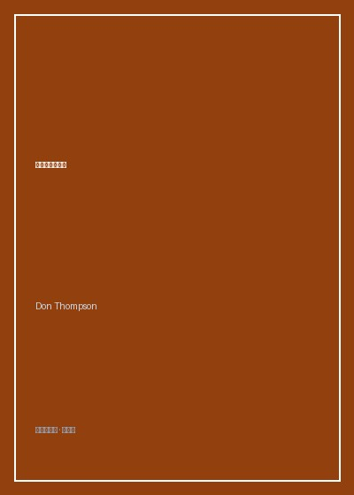

《身价四亿的鲨鱼》

总体观点
当代艺术天价市场的运转法则与传统美学价值基本脱节，其核心是一套精密运作的‘品牌化（Branding）’与‘信任中介系统’。一只泡在福尔马林玻璃箱里的虎鲨之所以能卖出1200万美元，关键不在于工艺难度，而在于它经过了超级画廊主查尔斯·萨奇的收藏认证、拉里·高古轩的全球分销网络背书，以及对冲基金大鳄史蒂夫·科恩的地位炫耀性购买。
顶级拍卖行（佳士得与苏富比）的夜场拍卖实质上是经过高度剧场化编排的金融衍生品交易。通过设置秘密保底价（Guarantee）、第三方保底担保、虚构叫价（Chandelier Bidding）与定制香槟晚宴，拍卖行营造出极度稀缺与非理性竞争的心理修罗场，将超级富豪的虚荣心转化为不可逆的击鼓传花资产泡沫。
在当代艺术生态圈中，艺术家本人已演变为跨国企业首席执行官。从安迪·沃霍尔的工厂车间，到达明安·赫斯特与杰夫·昆斯拥有数百名技术工人的流水线装配车间，艺术家负责提供概念品牌与公关炒作，艺术批评家与双年展策展人负责撰写晦涩难懂的学术学术背书，共同维持庞大洗钱与避税链条的合法性。
核心观点
-
1. 萨奇与达明安·赫斯特的品牌造神术
广告业巨头查尔斯·萨奇深谙现代注意力经济法则，用5万英镑委托年轻的赫斯特捕捞真鲨制作装置，随后策划‘精选英国青年艺术家（YBA）’展引发全民伦理争议，通过公关轰动将争议转化为无可匹敌的品牌溢价。
当那条价值千万的虎鲨标本因福尔马林浓度不足开始腐烂变绿时，赫斯特直接雇人重新抓捕了一条新鲨鱼替换，而买家科恩毫不在意，因为他购买的是‘赫斯特的概念与所有权证书’，而非肉身物质本身。 -
2. 天价夜拍中的‘吊灯叫价’与保底暗约
拍卖官在开拍初期对着会场后排空无一人的天花板吊灯虚报竞价，目的是迅速将叫价推高至委托人的秘密底价区间；而‘第三方保底协议’则让对冲基金藏家在竞标前就锁定了无风险套利收益。
书中披露苏富比拍卖一幅价值3000万美元的毕加索画作前，早已与欧洲富商签署保底协议：若无人加价富商按底价接盘，若有人溢价成交，富商则无偿分走超出部分的30%提成。 -
3. 高古轩帝国的排他性富豪俱乐部
超级画廊主拉里·高古轩建立起跨越纽约、伦敦、巴黎与香港的画廊连锁帝国。他掌握着谁有资格购买顶级艺术品的‘终审裁量权’，富豪们必须排队数年、承诺三年内不得转售且向博物馆捐赠作品，才能获得买入配额。
好莱坞巨星或硅谷新贵即使怀揣数千万美元现金，若非高古轩核心圈层名单常客，也无法买到理查德·塞拉或村上隆的首发大作，这种买方配给制人为制造了极端的阶层特权感。 -
4. 日内瓦自由港与免税艺术品保险库
全球最昂贵的当代艺术品极少挂在藏家客厅的墙壁上，而是直接从拍卖行密封空运至瑞士日内瓦自由港（Freeport）的高保密恒温仓库，成为富豪隐匿资产、逃避增值税与跨境资产转移的绝密硬通货。
汤普森调查显示，日内瓦自由港内积压着价值逾数百亿美元的毕加索、莫奈与赫斯特原作，许多画作十几年间在同一个保险库内转手交易数次，箱体封条却从未被启封过一次。 -
5. 策展人与威尼斯双年展的学术洗水池
看似独立崇高的威尼斯双年展、巴塞尔艺术展与泰特现代美术馆，背后无不充斥着超级画廊的幕后赞助。画廊为自己代理的艺术家出资赞助国家馆展览，换取美术馆为其作品披上‘划时代学术杰作’的历史神圣光环。
一名默默无闻的东欧装置艺术家一旦入选威尼斯双年展主题展并获得金狮奖提名，其画廊作品标价便能在一周之内从5000欧元暴涨至50万欧元，学术评价体系沦为商业估值的倍增催化剂。
全书结构
-
引子 1200万美元的鲨鱼
以达明安·赫斯特的福尔马林虎鲨标本拍卖为切入点，揭开当代艺术品定价脱离成本与常识法则的荒诞现实。
复盘对冲基金经理史蒂夫·科恩买下鲨鱼的过程，展示顶级富豪如何通过一次豪赌性购买确立全球文化名流地位。 -
第一部分 品牌画廊与超级推手
深入纽约切尔西与伦敦梅菲尔区，拆解高古轩、佩斯与白立方画廊如何通过垄断艺术家与买家名单掌控全球一级市场定价权。
解析画廊与代理艺术家之间的‘分成契约’与‘回购护盘’机制，揭示画廊如何不惜代价托市防止旗下艺术家作品贬值。 -
第二部分 拍卖行的剧场效应与心理战术
复盘苏富比与佳士得当代艺术夜拍专场的紧张气氛，解析拍卖行如何通过催眠般的拍卖官话术、图录包装与保底协议刺激非理性竞价。
以贾科梅蒂雕塑与培根三联画夜拍为例，展示两位竞拍者在电话委托员协助下陷入‘输不起的面子竞逐’直至刷新世界纪录。 -
第三部分 艺术家的跨国工厂与品牌运作
考察杰夫·昆斯、村上隆与赫斯特的现代化生产车间，分析观念艺术时代艺术家从工匠向品牌设计总监的身份异化。
探访杰夫·昆斯在曼哈顿雇佣数十位专业画师精确填涂巨大气球狗涂层的工业流水线，阐述版权概念与签名证书的经济学实质。 -
第四部分 谁在购买千万美元的当代艺术？
描绘华尔街交易员、俄罗斯寡头、中东王室与新兴科技新贵的买家画像，剖析阶层炫耀、抵押融资与离岸避税三重动机。
揭露艺术品抵押贷款行业内幕：藏家凭借一幅战后波普画作从私人银行获得数千万低息流动资金，艺术品成为金融衍生品。 -
第五部分 艺术批评家、双年展与泡沫的未来
检视艺术博览会与学术双年展在价格链条中的合谋，探讨当代艺术市场在经济衰退周期中的脆弱性与流动性枯竭风险。
回顾2008年雷曼破产当晚达明安·赫斯特自立门户在苏富比套现1.1亿英镑的最后疯狂，警示艺术品投机泡沫的最终破灭逻辑。